Fluffy Drop / варианты · 3 августа 2026
Риф уходит. Вот пять замен, и каждая собрана только из того, что в игре уже есть: её собственный фон, её буквы, её клетки, её десять цветов. Ничего нового не нарисовано.
Каждый вариант снят с живой сборки на всех трёх экранах, где этот фон стоит: уровень пройден, новый предмет, награда из сундука. Это не рисунки, а настоящий холст игры.
Ответить можно номером или названием. Смешивать тоже нормально: «второй, но луч послабее» или «пятый, но без розового» это рабочий ответ.
Скопирован с записи оригинала точно, до цвета каждого куста. Проблема не в качестве, а в том, что под водой у нас никто не живёт: у оригинала там пушистики, у нас на поле буквы.
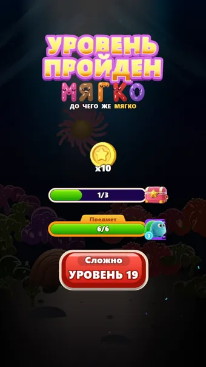
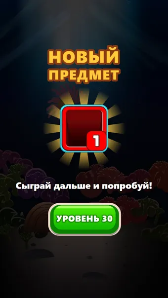
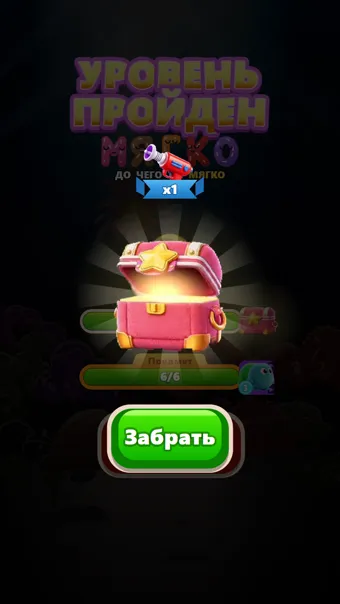
Ровно тот же фон, что под игровым полем и на загрузке: плоский фиолетовый и одно эллиптическое пятно света. Экран победы становится той же комнатой, что и всё остальное в игре. Не рисуется вообще ничего нового, ни одной новой строчки кода в отрисовке.
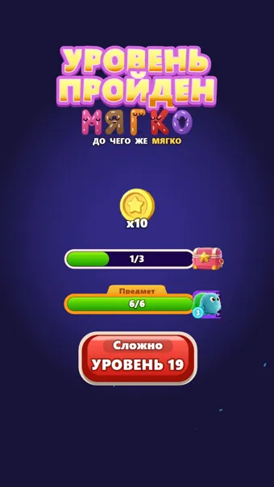
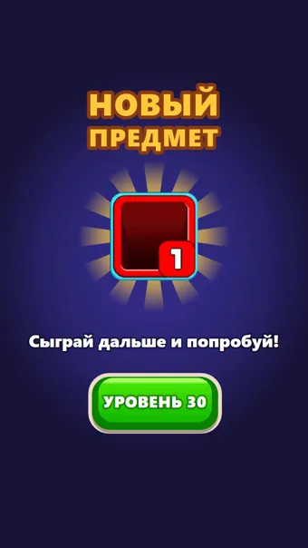
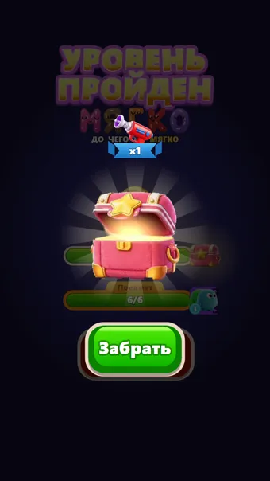
Та же комната, плюс широкий мягкий луч сверху и лужа света внизу, в которой стоит кнопка. От рифа остаётся единственное, что в нём работало: сцена, освещённая сверху. Луч медленно качается.
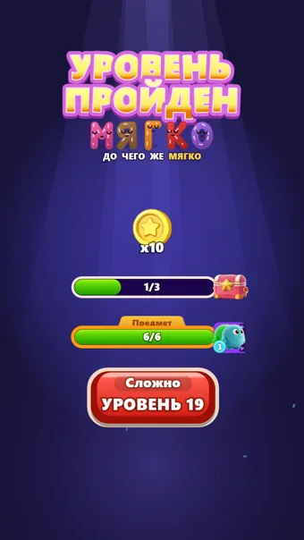
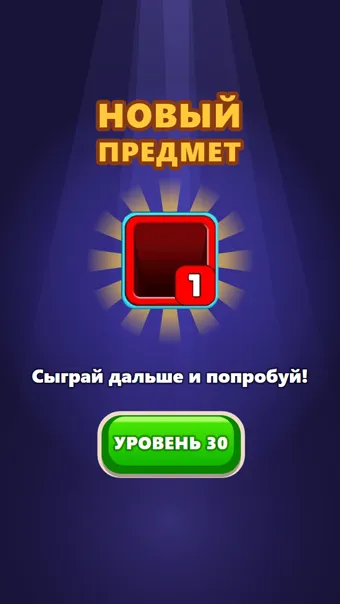
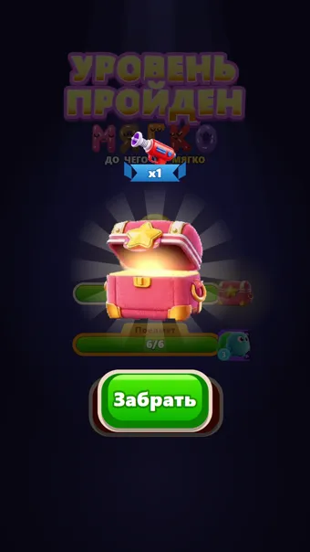
Обои из наших же букв, медленно ползут вверх. Взяты одиннадцать форм, которые читаются и в кириллице, и в латинице, поэтому паттерн один на оба языка. Все буквы одного цвета: десять цветов здесь читались бы как второе поле за экраном.
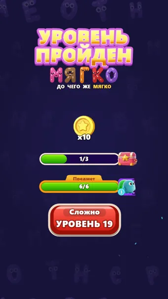
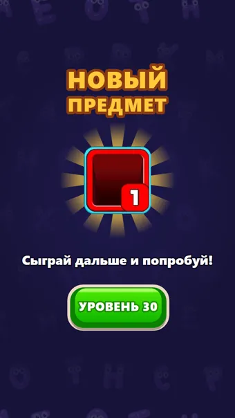
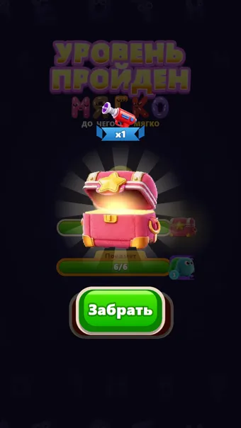
Обои из геометрии самого поля: пустые клетки, а среди них изредка контур ямки в одном из цветов. Единственный вариант, который говорит «головоломка», не говоря при этом больше ничего.
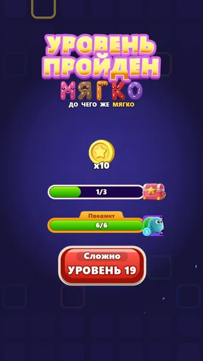
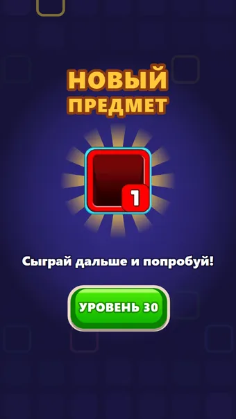
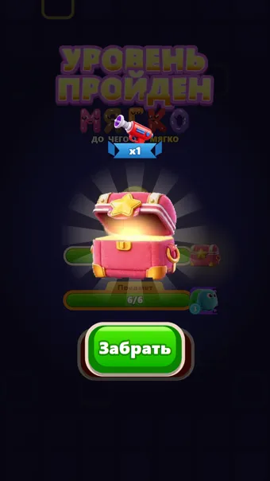
Расфокусированные шары в десяти цветах букв, всплывают снизу вверх. Единственный вариант, который правда «арт», а не паттерн, и всё равно сделан только из нашей палитры. Даёт экрану цвет, которого одному фиолетовому не хватает.
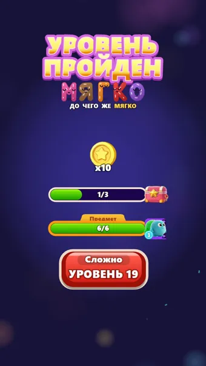
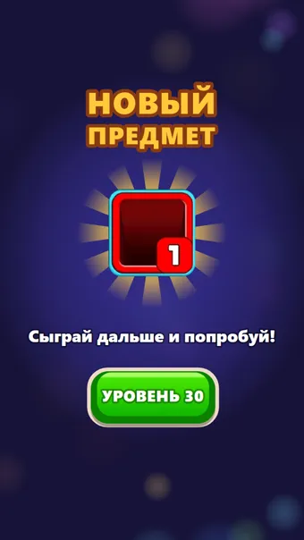
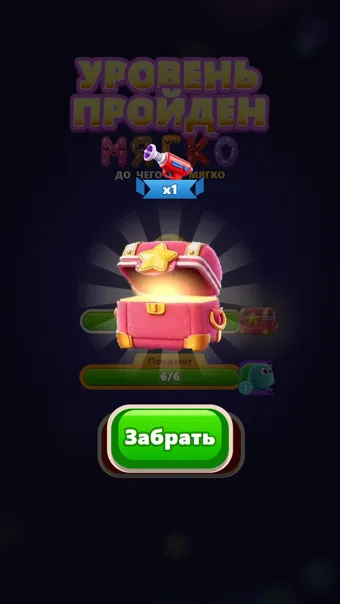
2 или 5. Второй ближе всего к тому, что экран уже умеет: свет сверху в рифе был, и именно он делал из экрана сцену, а не заставку. Пятый даёт цвет и ощущение праздника, которого одному фиолетовому не хватает.
1 самый безопасный и самый честный: победа в той же комнате, где играли. Если сомневаешься, он не проиграет никогда.
3 и 4 сильнее всех «про игру», но паттерн на этом экране конкурирует с логотипом. Поэтому в обоих середина намеренно приглушена, и рисунок виден только сверху и снизу.
Снято с текущей сборки, шесть фонов на трёх экранах, восемнадцать кадров. Переключатель живёт в src/render/winBackdrop.ts, одна константа WIN_BACKDROP; после выбора остальные удаляются, чтобы в коде не оставался тумблер. Что именно было нарисовано в рифе и на каких экранах он стоит, разобрано на отдельной странице.